Graph: Color Usage non-Spectrum
back to Fan's Reusable Matlab Codes Table of Content.
Contents
Good Colors to Use Darker
Nice darker light colors to use in matlab.
close all blue = [57 106 177]./255; red = [204 37 41]./255; black = [83 81 84]./255; green = [62 150 81]./255; brown = [146 36 40]./255; purple = [107 76 154]./255; cl_colors = {blue, red, black, ... green, brown, purple}; cl_str_clr_names = ["blue", "red", "black", "green", "brown", "purple"]; for it_color=1:length(cl_colors) figure(); x = [0 1 1 0]; y = [0 0 1 1]; fill(x, y, cl_colors{it_color}); st_text = [cl_str_clr_names(it_color) num2str(round(cl_colors{it_color}*255))]; hText = text(.10,.55, st_text); hText.Color = 'white'; hText.FontSize = 30; snapnow; end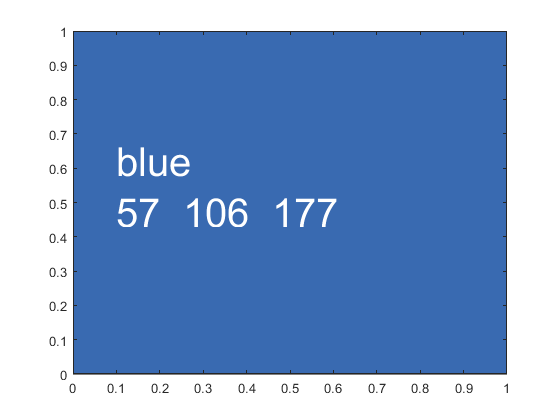 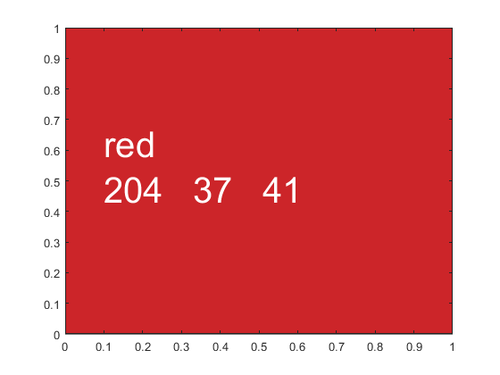 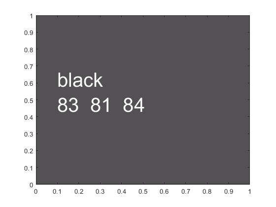 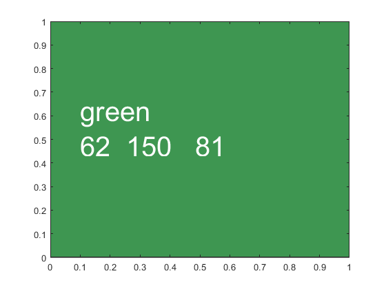 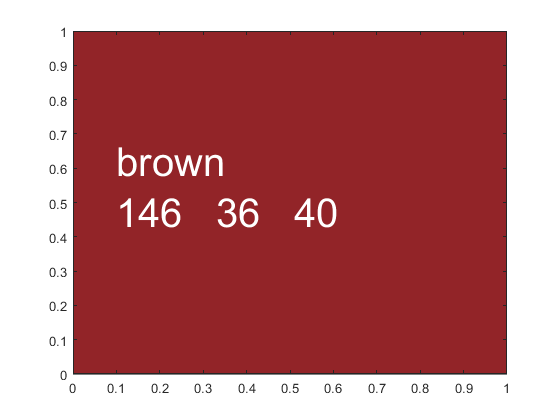 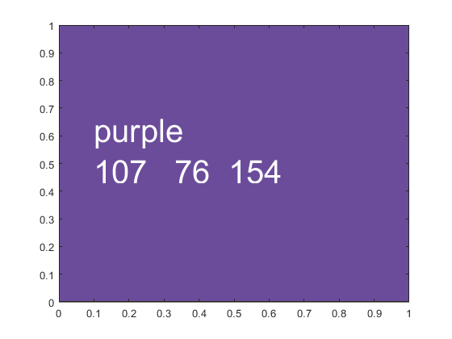
Good Colors to Use Lighter
Nice ligher colors to use in matlab.
close all blue = [114 147 203]./255; red = [211 94 96]./255; black = [128 133 133]./255; green = [132 186 91]./255; brown = [171 104 87]./255; purple = [144 103 167]./255; cl_colors = {blue, red, black, ... green, brown, purple}; cl_str_clr_names = ["blue", "red", "black", "green", "brown", "purple"]; for it_color=1:length(cl_colors) figure(); x = [0 1 1 0]; y = [0 0 1 1]; fill(x, y, cl_colors{it_color}); st_text = [cl_str_clr_names(it_color) num2str(round(cl_colors{it_color}*255))]; hText = text(.10,.55, st_text); hText.Color = 'white'; hText.FontSize = 30; snapnow; end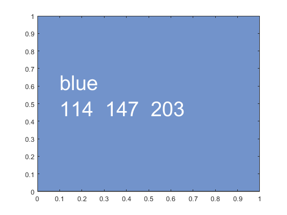 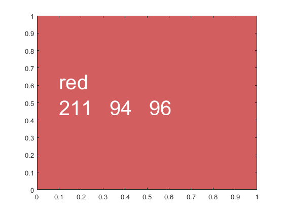 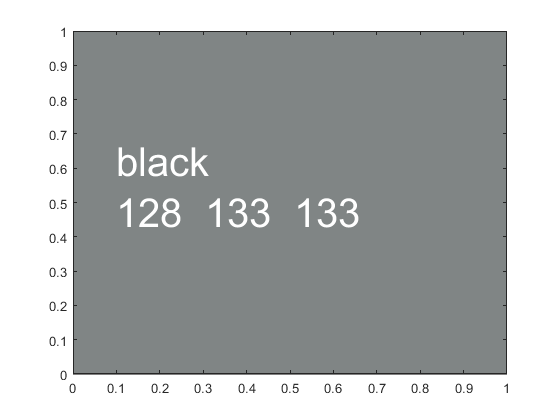 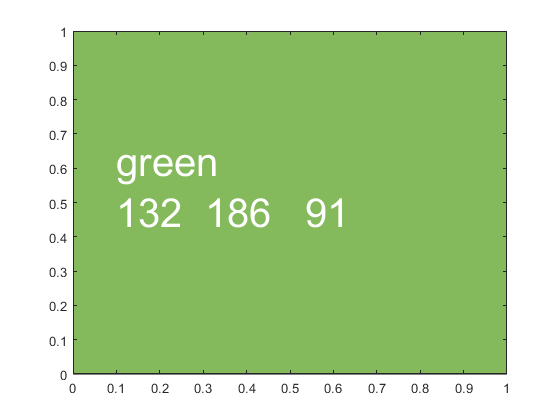 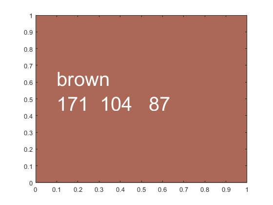 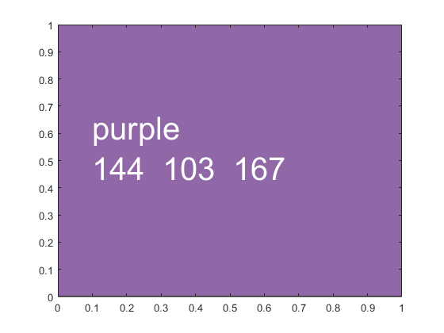
Matlab has a graphical tool for picking color
https://www.mathworks.com/help/matlab/ref/uisetcolor.html enter uisetcolor pick color from new window and color values will appear uisetcolor
figure(); hold on; x = rand([10,1]); y = rand([10,1]); % Then can use for plot plot(x,y,'Color',[.61 .51 .74]) % Can use for Scatter scatter(x, y, 10, ... 'MarkerEdgeColor', [.61 .51 .74], 'MarkerFaceAlpha', 0.1, ... 'MarkerFaceColor', [.61 .51 .74], 'MarkerEdgeAlpha', 0.1);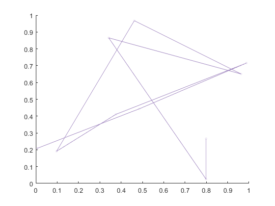